실시간 자외선지수
2024.05.30. 08:00
0
마크
마크를 클릭하면 해당 지역의 감시 자료를
확인할 수 있습니다.
서울의
자외선지수는
위험 단계입니다.
보통 단계에서는 햇볕에 노출시 2-3시간
내에도피부 화상을 입을 수 있습니다.
외출시 모자, 선글라스 이용하고 자외선
차단제를발라야 합니다.
총 자외선지수는 연중 10분 간격으로 04시~20시까지
제공하며,
자외선 노출 시간에 따른 피부화상은 개인별
차이가 있을 수 있음.
본 자료는 실시간 품질관리된 자료로 추후 변경될 수
있음.
회색으로 표시된 관측소는 해당시각 자료가 수집되지 못한 경우입니다.

9
서울
4
강릉
8
울릉도
11
인천
8
청주
8
안면도
8
대전
8
대구
9
포항
2
울산
8
부산
7
전주
6
광주
7
목포
8
고산
서울 2024.05.30. 08:00
차트 영역
2022년 일최고 자외선 지수 발생 일수
차트 영역